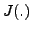
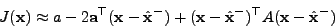
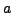
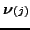

Next: Robust observations
Up: The Vision Package
Previous: Representing 3D Euclidean transformations
Contents
#include <gandalf/vision/lev_marq.h>
The Levenberg-Marquardt
algorithm [9,2]
is a general non-linear downhill minimisation algorithm
for the case when derivatives of the objective function are known.
It dynamically mixes Gauss-Newton and gradient-descent iterations.
We shall develop the L-M algorithm for a simple
case in our notation, which is derived from Kalman filtering
theory [1]. The Gandalf implementation of
Levenberg-Marquardt will then be presented. Let the unknown parameters be
represented by the vector  , and let noisy measurements of
be made:
, and let noisy measurements of
be made:
where
is a measurement function and
is zero-mean
noise with covariance
. Since we are describing an iterative
minimization algorithm, we shall assume that we have already obtained
an estimate of .
Then the maximum likelihood solution for a new estimate minimizes
We form a quadratic approximation to  around , and minimize
this approximation to to obtain a new estimate .
In general we can write such a quadratic approximation as

for scalar , vectors ,  and matrices
and matrices  ,
,  .
Note that here and in equation (5.8) the signs and factors of two
are chosen WLOG to simplify the resulting expressions for the solution.
Differentiating, we obtain
.
Note that here and in equation (5.8) the signs and factors of two
are chosen WLOG to simplify the resulting expressions for the solution.
Differentiating, we obtain
At the minimum point we have
which means that
 |
(5.9) |
Thus we need to obtain and to compute the update.
We now consider the form of in (5.8).
Writing the Jacobian of
as
we have
In the last formula for
, the terms
involving the second derivatives of
have been omitted. This is done because these terms are
generally much smaller and can in practice be omitted, as well as because
the second derivatives are more difficult and complex to compute than the
first derivatives.
Now we solve the above equations for and given
the values of function
and the Jacobian
evaluated at the previous estimate .
We have immediately
We now write the innovation vectors
 as
Then we have
Combining equations (5.9) and (5.12) we
obtain the linear system
 |
(5.13) |
to be solved for the adjustment
.
The covariance of the state is
The update (5.13) may be repeated,
substituting the new as , and
improving the estimate until convergence is achieved according to some
criterion. Levenberg-Marquardt modifies this updating procedure by
adding a value  to the diagonal elements of the linear system matrix
before inverting it to obtain the update.
is reduced if the last iteration gave
an improved estimate, i.e. if
to the diagonal elements of the linear system matrix
before inverting it to obtain the update.
is reduced if the last iteration gave
an improved estimate, i.e. if  was reduced, and increased if
increased, in which case the estimate of is reset to the
estimate before the last iteration. It is this that allows the algorithm
to smoothly switch between Gauss-Newton (small ) and gradient
descent (large ).
was reduced, and increased if
increased, in which case the estimate of is reset to the
estimate before the last iteration. It is this that allows the algorithm
to smoothly switch between Gauss-Newton (small ) and gradient
descent (large ).
This version is a generalization
of Levenberg-Marquardt as it is normally presented
(e.g. [12]) in that we incorporate vector measurements
 with covariances
, rather than scalar measurements
with variances. The full algorithm is as follows:
with covariances
, rather than scalar measurements
with variances. The full algorithm is as follows:
- Start with a prior estimate of . Initialize
to some starting value, e.g. 0.001.
- Compute the updated estimate by solving the linear
system (5.13) for the adjustment, having first added
to each diagonal element of . Note that the Lagrange
multiplier diagonal block should remain at zero.
- Compute the least-squares residuals
and
from (5.8).
- If
, reduce by a specified factor
(say 10), set to , and return to step 2.
- Otherwise, the update failed to reduce the residual, so increase
by a factor (say 10), forget the updated and
return to step 2.
The algorithm continues until some pre-specified termination criterion
has been met, such as a small change to the state vector, or a limit on
the number of iterations.
If the measurements
are unbiased and normally distributed,
the residual
is a  random variable, and testing
the value of against a distribution is a good way
of checking that the measurement noise model is reasonable.
The number of degrees of freedom (DOF) of the distribution
can be determined as the total size of the measurement vectors,
minus the size of the state.
If the function returns the dimension of its vector
argument, then the degrees of freedom may be computed as
random variable, and testing
the value of against a distribution is a good way
of checking that the measurement noise model is reasonable.
The number of degrees of freedom (DOF) of the distribution
can be determined as the total size of the measurement vectors,
minus the size of the state.
If the function returns the dimension of its vector
argument, then the degrees of freedom may be computed as
Subsections
Next: Robust observations
Up: The Vision Package
Previous: Representing 3D Euclidean transformations
Contents
Philip McLauchlan
2009-01-27